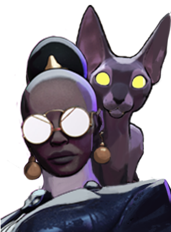

Calico
Assassina que vive de emboscadas e de aparecer onde ninguém espera.

Assassina que vive de emboscadas e de aparecer onde ninguém espera.
1.929.993 partidas analisadas · atualizado em 16/10/2026 as 21:22 · fonte: deadlock-api.com
Lança um conjunto de bombas que explodem após um instante com dano espiritual; inimigos atingidos por várias bombas sofrem dano reduzido.
Avança e corta todos ao redor em círculo com dano corpo a corpo, curando um pouco se acertar um herói.
Vira sombra e possui seu gato, ganhando velocidade que aumenta com o tempo e sumindo do minimapa; sofrer dano de herói zera o bônus.
Fica intangível nas sombras, ganhando velocidade e causando dano espiritual, e volta depois de um tempo causando dano espiritual de novo.
3.184 partidas registradas com esta build.
🏆 Roubo de vida corpo a corpo (800) · 🏆 Perseguidor (1.600) · 🏆 Golpe Espiritual (800) · 🏆 Frente Fria (1.600) · 🏆 Botas de corrida (800) · 🏆 Colecionador de Troféus (1.600) · 🏆 Arrebatamento de Espírito (3.200) · 🏆 Carga Corpo a Corpo (1.600) · 🏆 Destruidor de Espíritos (1.600) · 🏆 Refutação (800)
1.957 partidas registradas com esta build.
Roubo de vida corpo a corpo (800) · Perseguidor (1.600) · Golpe Espiritual (800) · Botas de corrida (800) · Colecionador de Troféus (1.600) · Frente Fria (1.600) · Arrebatamento de Espírito (3.200) · Perto (800) · Regeneração Extra (800) · Grão (800)
1.833 partidas registradas com esta build.
Roubo de vida corpo a corpo (800) · Perseguidor (1.600) · Golpe Espiritual (800) · Botas de corrida (800) · Colecionador de Troféus (1.600) · Frente Fria (1.600) · Arrebatamento de Espírito (3.200) · Tiro Místico (1.600) · Destruidor de Espíritos (1.600) · Golpe de vida (3.200)
07/09: 50.9% → 26/10: 51.7% → 14/12: 50.9% → 01/02: 51.0% → 22/03: 47.9% → 10/05: 50.4% → 28/06: 50.8% → 16/08: 51.4% → 04/10: 47.7%